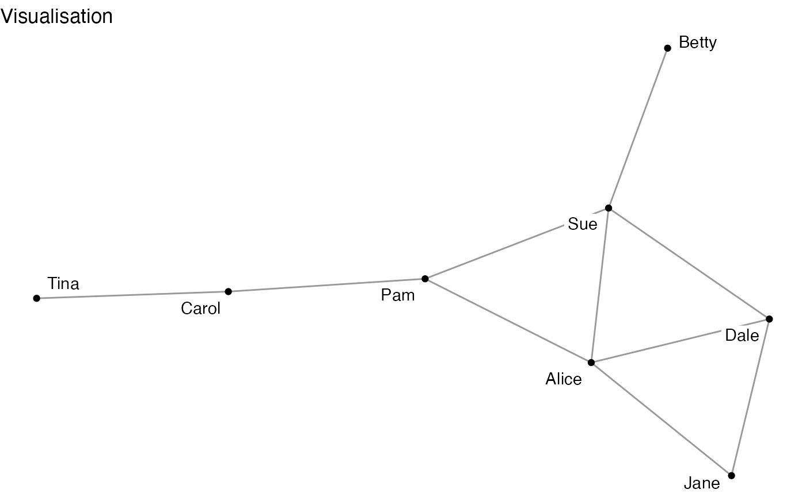
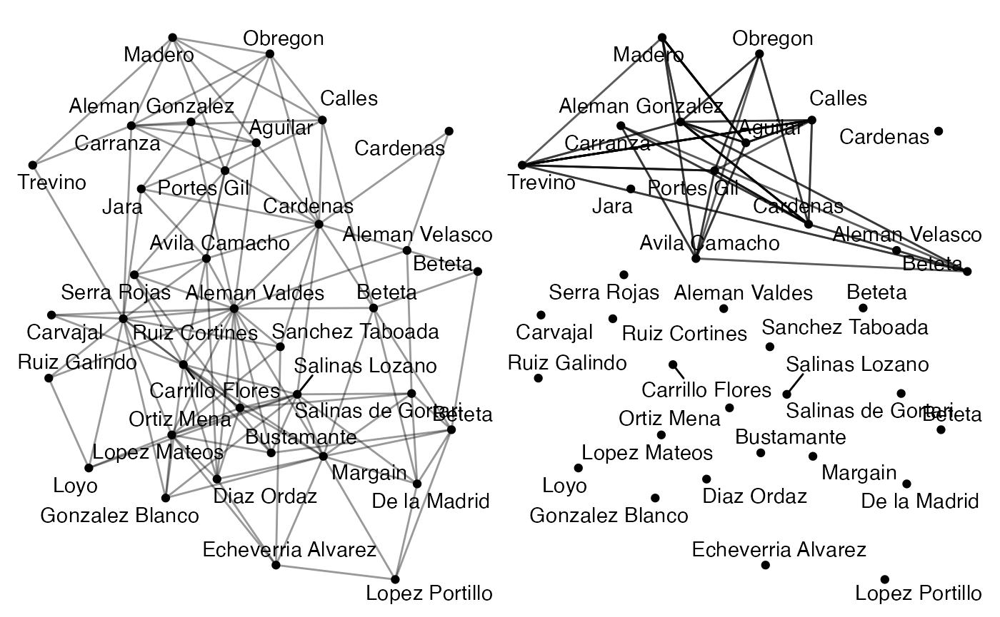
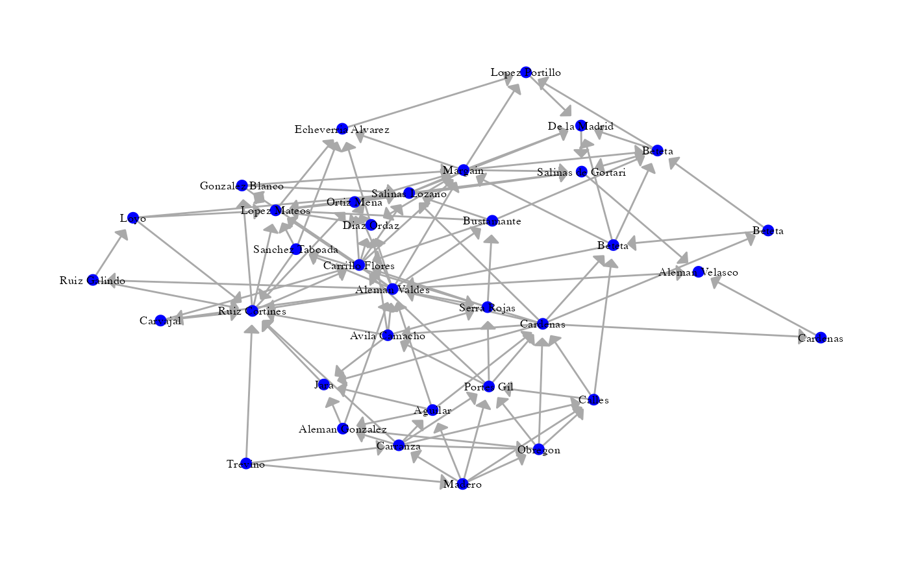

There are a host of packages for plotting in R, and for plotting networks in R. Plotting in R is typically based around two main approaches: the ‘base’ approach in R by default, and the ‘grid’ approach made popular by the famous and very flexible ggplot2 package.1 Approaches to plotting graphs or networks in R can be similarly divided.
The two classic packages are igraph and sna, both building upon the base R graphics engine. Newer packages {ggnetwork} and {ggraph} build upon a grid approach.^[
Others include: ‘Networkly’ for creating 2-D and 3-D interactive networks that can be rendered with plotly and can be easily integrated into shiny apps or markdown documents; ‘visNetwork’ interacts with javascript (vis.js) to make interactive networks (http://datastorm-open.github.io/visNetwork/); and ‘networkD3’ interacts with javascript (D3) to make interactive networks (https://www.r-bloggers.com/2016/10/network-visualization-part-6-d3-and-r-networkd3/). ]
This vignette introduces some functions in the migraph package for plotting and visualising network data. migraph builds upon the ggplot2/ggraph engine for plotting.
{migraph} to quickly plot network graphs
To get a basic visualisation of the network before adding various specifications, the autographr() function in migraph is a quick and easy way to obtain a clear first look of the network for preliminary investigations and understanding of the network.
library(migraph)
autographr(ison_brandes)We can also specify the colours, groups, shapes, and sizes of nodes in the autographr() function using the following parameters:
node_colour
node_shape
node_size
Append ggtitle() from the ggplot2 package to add a title. migraph works well with both ggplot2 and ggraph functions that can be appended to create more tailored visualisations of the network.
autographr(ison_adolescents,
labels = TRUE,
node_size = 1.5) +
ggplot2::ggtitle("Visualisation")
The gglineage() and ggevolution() functions can be used to visualise changes in a network over time. gglineage() shows how observations are connected to preceding or succeeding observations. ggevolution() plots two networks for comparison of the changes in their structure from one to the next.
mpn_elite_mex2 <- generate_random(mpn_elite_mex)
ggevolution(mpn_elite_mex, mpn_elite_mex2)
{ggraph} to extend these plots
For more flexibility with visualizations, migraph users are encouraged to use the excellent ggraph package. ggraph is built upon the venerable ggplot2 package and works with tbl_graph and igraph objects. As with ggplot2, ggraph users are expected to build a particular plot from the ground up, adding explicit layers to visualise the nodes and edges.
library(ggraph)
ggraph(mpn_elite_mex, layout = "fr") +
geom_edge_link(edge_colour = "dark grey",
arrow = arrow(angle = 45,
length = unit(2, "mm"),
type = "closed"),
end_cap = circle(3, "mm")) +
geom_node_point(size = 2.5, shape = 19, colour = "blue") +
geom_node_text(aes(label=name), family = "serif", size = 2.5) +
scale_edge_width(range = c(0.3,1.5)) +
theme_graph() +
theme(legend.position = "none")
As we can see in the code above, we can specify various aspects of the plot to tailor it to our network. Firstly, we can alter the layout of the network using the layout = argument to create a clearer visualisation of the ties between nodes. This is especially important for larger networks, where nodes and ties are more easily obscured or misrepresented. In ggraph, the default layout is the “stress” layout. The “stress” layout is a safe choice because it is deterministic and fits well with almost any graph, but it is also a good idea to explore and try out other layouts on your data. More layouts can be found in the graphlayouts and igraph R packages. To use a layout from the igraph package, enter only the last part of the layout algorithm name (eg. layout = "mds" for “layout_with_mds”).
Secondly, using geom_node_point() which draws the nodes as geometric shapes (circles, squares, or triangles), we can specify the presentation of nodes in the network in terms of their shape (shape=, choose from 1 to 21), size (size=), or colour (colour=). We can also use aes() to match to node attributes. To add labels, use geom_node_text() or geom_node_label() (draws labels within a box). The font (family=), font size (size=), and colour (colour=) of the labels can be specified.
Thirdly, we can also specify the presentation of edges in the network. To draw edges, we use geom_edge_link0() or geom_edge_link(). Using the latter function makes it possible to draw a straight line with a gradient. The following features can be tailored either globally or matched to specific edge attributes using aes():
colour: edge_colour=
width: edge_width=
linetype: edge_linetype=
opacity: edge_alpha=
For directed graphs, arrows can be drawn using the arrow= argument and the arrow() function from ggplot2. The angle, length, arrowhead type, and padding between the arrowhead and the node can also be specified.
To change the position of the legend, add the theme() function from ggplot2. The legend can be positioned at the top, bottom, left, or right, or removed using “none”.
We can print the plots we have made to PDF by point-and-click by selecting ‘Save as PDF…’ from under the ‘Export’ dropdown menu in the plots panel tab of RStudio.
If you want to do this programmatically, say because you want to record how you have saved it so that you can e.g. make some changes to the parameters at some point, this is also not too difficult.
After running the (gg-based) plot you want to save, use the command ggsave("my_filename.pdf") to save your plot as a PDF to your working directory. If you want to save it somewhere else, you will need to specify the file path (or change the working directory, but that might be more cumbersome). If you want to save it as a different filetype, replace .pdf with e.g. .png or .jpeg. See ?ggsave for more.
‘gg’ stands for the Grammar of Graphics.↩︎